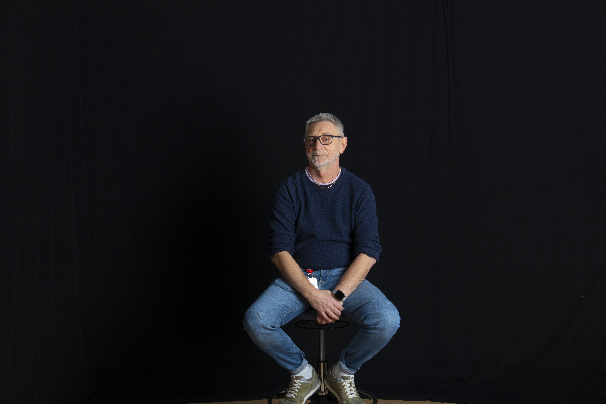

Produktinformasjon:
Utforsk vårt utvalg av førsteklasses Gaming PC-er. Oppdag hvordan den riktige Gaming PC-en kan forbedre din spillopplevelse og gi en profesjonell touch til dine spill.
Når du skal kjøpe en Gaming PC er det viktig å tenke på hva du skal bruke den til. Om du skal bruke den til å spille Call of Duty Black Ops 6, er det viktig å ha en god prosessor, god grafikkytelse og en stor skjerm. Men, hvorfor velge? Vi anbefaler en Gaming PC som kan håndtere alle kravene til Call of Duty Black Ops 6, med en god prosessor, god grafikkytelse og en stor skjerm. Dette gir deg en Gaming PC som kan brukes til å spille Call of Duty Black Ops 6 med fullt trykk.
Vi anbefaler følgende Gaming PC-er:
Om Alienware Aurora R10
Alienware Aurora R10 er en av de beste Gaming PC-ene på markedet. Den har en god prosessor, god grafikkytelse og en stor skjerm. Den er også svært lett og er enkel å bruke. Vi anbefaler Alienware Aurora R10 til alle som skal spille Call of Duty Black Ops 6.
Om MSI Trident X
MSI Trident X er en av de beste Gaming PC-ene på markedet. Den har en god prosessor, god grafikkytelse og en stor skjerm. Den er også svært lett og er enkel å bruke. Vi anbefaler MSI Trident X til alle som skal spille Call of Duty Black Ops 6.
Om CyberpowerPC Gamer Supreme SLC840
CyberpowerPC Gamer Supreme SLC840 er en av de beste Gaming PC-ene på markedet. Den har en god prosessor, god grafikkytelse og en stor skjerm. Den er også svært lett og er enkel å bruke. Vi anbefaler CyberpowerPC Gamer Supreme SLC840 til alle som skal spille Call of Duty Black Ops 6.
HiTEK AS er et firma som ble startet i 2020 av vår daglig leder, Alf Viggo Torgalsbøen. Vi har siden starten vokst seg til å bli en av de ledende leverandørene av IT-produkter i Norge. Vårt mål er å gi våre kunder de beste produktene og tjenestene, samtidig som vi har en god pris. Vi har en stor erfaring med å levere produkter til privatpersoner og bedrifter, og vi har en god kundeservice.
Alf Viggo Torgalsbøen
Daglig leder